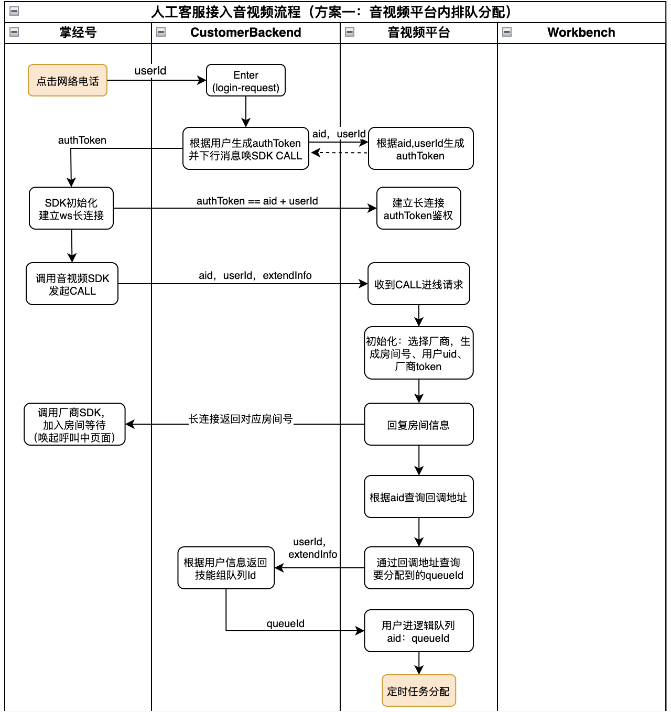

目录
Git分支管理规范
- 常用分支说明
- 操作流程实例
设计规范
前言
阿里设计规约
本组UML图示例
阿里巴巴Java开发规范解读
Git分支管理规范
常用分支说明
master分支:
- 线上版本分支, 对应线上的每一个版本, 用tag标记
- 保护分支, 不允许在该分支直接提代码
- 稳定长期存在
develop分支:
- 开发分支, 包含所有最新功能和代码, 所有开发基于此分支进行
- 保护分支, 不允许直接在该分支提代码
- 开发新功能时, 基于最新的develop分支切出自己的feature分支进行
- 稳定长期存在
feature & fix分支:
- 新功能分支, 或修复BUG分支, 通常对应Sprint中的一个特定任务
- 分支命名用 feature-xxx 或 fix-xxx 开头,且有意义的词汇构成
- comment 包含Sprint中对应任务id 及此分支功能描述
- 开发完成后, 提交PR(pull request) 到 origin develop分支, PR merge到develop分支后并删除此分支
release分支:
- 发布分支, 准备上线版本时 使用的分支.
- 准备发布新版本时，从develop 切出一个 release 分支，来做发布前的准备
- 在修复线上紧急BUG时, 从 master 切出一个 release(hotfix)分支, 来做发布前的准备
- release分支 测试发现的bug直接在 release分支进行修复, 上线后 合并至 master 分支 和 develop分支
- 上线发布完成后, 可以选择删除release分支
操作流程示例
- 两个长期分支: master 和 develop. 日常开发中, 逐渐丰富develop分支功能
- 多人协作开发时, 提交PR前先在本地 pull并rebase最新的远端develop分支, git pull origin develop –rebase;
- 开发过程中准备一些新功能上线. 首先, 团队一起挑选出要上线的commit点
- 从该commit切出release分支 , 发布到UAT环境 并交给测试和业务同事验证功能, 如符合预期 则使用该版本应用包上线. 上线完成后合并至 master 分支.

- 若该release分支测试时出了问题, 则直接在该分支修复问题. 知道符合预期后 发布生产, 并将新改动合并至master和develop分支.
- 若从develop分支切release分支时, 有不想跟随本次上线的commit, 使用git cherry-pick精确选择要上线的commit, 从而产出符合预期的release分支.
- 当生产环境出现要紧急修复的BUG时, 从线上对应的master分支commit 切出release分支, 修复bug后上线发布, 完成后合并至master和develop.
设计规范
前言
此处谈不上是规范, 希望大家一起探讨,总结出工作中必要的一些设计及文档产出.
- 比较复杂的需求开始前, 往往需要提前进行方案设计和评审, 那我们要评审些什么? 评审产出什么样的结果?
- 评估需求实现的技术方案&细节&可行性 -> 如何描述技术方案?
- 方案带来的改动点 -> 参与方对改动内容达成一致
- 不同方案的优缺点&成本 -> 拍板确定实施方案
- 优雅的设计细节 -> 保证复用性和拓展性
- …
- 代码或项目开发完成后, 如何验证符合预期? -> 遵循文档约定
阿里设计规约

本组UML图示例
我们组开发的一个电话系统
1. 一通电话生命周期的状态图:

2. 通话发起到接听的时序图

3. 与协作方外部系统交互的 活动图
4. UAT测试环境各个服务间的部署图